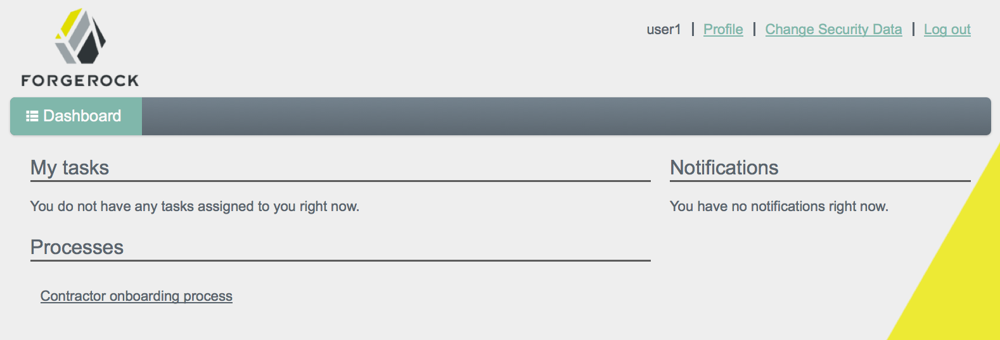
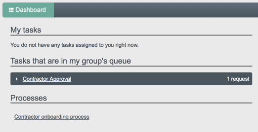
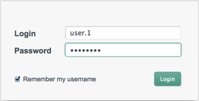

Key to any identity management solution is the ability to provide workflow-driven provisioning activities, whether for self-service actions such as requests for entitlements, roles or resources, running sunrise or sunset processes, handling approvals with escalations, or performing maintenance.
OpenIDM provides an embedded workflow and business process engine based on Activiti and the Business Process Model and Notation (BPMN) 2.0 standard.
More information about Activiti and the Activiti project can be found at http://www.activiti.org.
Business Process Model and Notation 2.0 is the result of consensus among Business Process Management (BPM) system vendors. The Object Management Group (OMG) has developed and maintained the BPMN standard since 2004.
The first version of the BPMN specification focused only on graphical notation, and quickly became popular with the business analyst audience. BPMN 1.x defines how constructs such as human tasks, executable scripts, and automated decisions are visualized in a vendor-neutral, standard way. The second version of BPMN extends that focus to include execution semantics, and a common exchange format. Thus, BPMN 2.0 process definition models can be exchanged not only between different graphical editors, but can also be executed as is on any BPMN 2.0-compliant engine, such as the engine embedded in OpenIDM.
Using BPMN 2.0, you can add artifacts describing workflow and business process behavior to OpenIDM for provisioning and other purposes. For example, you can craft the actual artifacts defining business processes and workflow in a text editor, or using a special Eclipse plugin. The Eclipse plugin provides visual design capabilities, simplifying packaging and deployment of the artifact to OpenIDM. See the Activiti BPMN 2.0 Eclipse Plugin documentation for instructions on installing Activiti Eclipse BPMN 2.0 Designer.
Also, read the Activiti User Guide section covering BPMN 2.0 Constructs, which describes in detail the graphical notations and XML representations for events, flows, gateways, tasks, and process constructs.
With the latest version of Activiti, JavaScript tasks can be added to
workflow definitions. However, OpenIDM functions cannot be called from a
JavaScript task in a workflow. Therefore, you can use JavaScript for
non-OpenIDM workflow tasks, but you must use the
activiti:expression construct to call OpenIDM functions.
OpenIDM embeds an Activiti Process Engine that is started in the OpenIDM OSGi container.
After OpenIDM has been installed (as described in the Installation Guide), start OpenIDM, and run the scr list command at the console to check that the workflow bundle is active.
-> OpenIDM ready scr list Id State Name ... [ 39] [active ] org.forgerock.openidm.workflow ...
OpenIDM reads workflow definitions from the
/path/to/openidm/workflow directory. To test workflow
integration, at least one workflow definition must exist in this directory.
A sample workflow (example.bpmn20.xml) is provided in
the /path/to/openidm/samples/misc directory. Copy this
workflow to the /path/to/openidm/workflow directory to
test the workflow integration.
$ cd /path/to/openidm $ cp samples/misc/example.bpmn20.xml workflow/
Verify the workflow integration by using the REST API. The following REST call lists the defined workflows:
$ curl \ --cacert self-signed.crt \ --header "X-OpenIDM-Username: openidm-admin" \ --header "X-OpenIDM-Password: openidm-admin" \ --request GET \ "https://localhost:8443/openidm/workflow/processdefinition?_queryId=query-all-ids"
The sample workflow definition that you copied in the previous step is named
osgiProcess. The result of the preceding REST call
therefore includes output similar to the following:
{
...
"result":[
{
...
"key": "osgiProcess",
...
"name":"Osgi process",
...
"_id":"osgiProcess:1:3",
...
}
]
}
The osgiProcess workflow calls OpenIDM, queries the
available workflow definitions from Activiti, then prints the list of
workflow definitions to the OpenIDM logs. Invoke the osgiProcess
workflow with the following REST call:
$ curl \
--cacert self-signed.crt \
--header "X-OpenIDM-Username: openidm-admin" \
--header "X-OpenIDM-Password: openidm-admin" \
--header "Content-Type: application/json" \
--request POST \
--data '{"_key":"osgiProcess"}' \
"https://localhost:8443/openidm/workflow/processinstance?_action=create"The workflow prints the list of workflow definitions to the OpenIDM console. With the default sample, you should see something like this on the console:
script task using resolver: [
pagedResultsCookie:null,
remainingPagedResults:-1,
result:[
[
tenantId:,
candidateStarterGroupIdExpressions:[],
candidateStarterUserIdExpressions:[],
participantProcess:null,
processDiagramResourceName:null,
historyLevel:null,
hasStartFormKey:false,
laneSets:[],
version:1, _id:osgiProcess:1:3,
description:null,
name:Osgi process,
executionListeners:[:],
key:osgiProcess,
resourceName:OSGI-INF/activiti/example.bpmn20.xml,
ioSpecification:null,
taskDefinitions:null,
suspensionState:1,
deploymentId:1,
properties:[:],
startFormHandler:null,
suspended:false,
variables:null,
_rev:1,
revisionNext:2,
category:Examples,
eventSupport:[:],
graphicalNotationDefined:false
]
]
]
script task using expression resolver: [
pagedResultsCookie:null,
remainingPagedResults:-1,
result:[
[
tenantId:,
candidateStarterGroupIdExpressions:[],
...
]
The OpenIDM Activiti module is configured in a file named
conf/workflow.json. If this file is absent from the
configuration, the workflow module is unavailable for use. In the default
OpenIDM installation, the workflow.json file has the
following basic configuration:
{
"enabled" : true
}
You can disable the workflow module by setting the
"enabled" property to false.
There are several additional configuration properties for the Activiti
module. A sample workflow.json file that includes all
configurable properties, is provided in samples/misc. To
configure an Activiti engine beyond the default configuration, edit this
sample file and copy it to the /path/to/openidm/conf
directory.
The sample workflow.json file contains the following
configuration:
{
"enabled" : true,
"location" : "remote",
"engine" : {
"url" : "http://localhost:9090/openidm-workflow-remote-3.0.0",
"username" : "youractivitiuser",
"password" : "youractivitipassword"
},
"mail" : {
"host" : "yourserver.smtp.com",
"port" : 587,
"username" : "yourusername",
"password" : "yourpassword",
"starttls" : true
},
"history" : "audit"
}
These fields have the following meaning:
enabled. Indicates whether the Activiti module is enabled for use. Possible values aretrueorfalse. The default value istrue.mail. Specifies the details of the mail server that Activiti will use to send email notifications. By default, Activiti uses the mail serverlocalhost:25. To specify a different mail server, enter the details of the mail server here.host. The host of the mail server.port. The port number of the mail server.username. The user name of the account that connects to the mail server.password. The password for the user specified above.startTLS. Whether startTLS should be used to secure the connection.
history. Determines the history level that should be used for the Activiti engine. For more information, see Configuring the Activiti History Level.
The Activiti history level determines how much historical information is
retained when workflows are executed. You can configure the history level
by setting the history property in the
workflow.json file, for example:
"history" : "audit"
The following history levels can be configured:
none. No history archiving is done. This level results in the best performance for workflow execution, but no historical information is available.activity. Archives all process instances and activity instances. No details are archived.audit. This is the default level. All process instances, activity instances and submitted form properties are archived so that all user interaction through forms is traceable and can be audited.full. This is the highest level of history archiving and has the greatest performance impact. This history level stores all the information that is stored for theauditlevel, as well as any process variable updates.
The following section outlines the process to follow when you create an Activiti workflow for OpenIDM. Before you start creating workflows, you must configure the Activiti engine, as described in Configuring the Activiti Engine.
Define your workflow in a text file, either using an editor, such as Activiti Eclipse BPMN 2.0 Designer, or a simple text editor.
Package the workflow definition file as a
.barfile (Business Archive File). If you are using Eclipse to define the workflow, a.barfile is created when you select "Create deployment artifacts". A.barfile is essentially the same as a.zipfile, but with the.barextension.Copy the
.barfile to theopenidm/workflowdirectory.Invoke the workflow using a script (in
openidm/script/) or directly using the REST interface. For more information, see Invoking Activiti Workflows.You can also schedule the workflow to be invoked repeatedly, or at a future time. For more information, see the Scheduler Reference.
You can invoke workflows and business processes from any trigger point within
OpenIDM, including reacting to situations discovered during reconciliation.
Workflows can be invoked from script files, using the
openidm.create() function, or directly from the REST
interface.
The following sample script extract shows how to invoke a workflow from a script file:
/*
* Calling 'myWorkflow' workflow
*/
var params = {
"_key": "myWorkflow"
};
openidm.create('workflow/processinstance', null, params);
The null in this example indicates that you do not want to
specify an ID as part of the create call. For more information, see the
Function
Reference.
You can invoke the same workflow from the REST interface by sending the following REST call to OpenIDM:
$ curl \
--cacert self-signed.crt \
--header "X-OpenIDM-Username: openidm-admin" \
--header "X-OpenIDM-Password: openidm-admin" \
--header "Content-Type: application/json" \
--request POST \
--data '{"_key":"myWorkflow"}' \
"https://localhost:8443/openidm/workflow/processinstance?_action=create"
There are two ways in which you can specify the workflow definition that is used when a new workflow instance is started.
_keyspecifies theidattribute of the workflow process definition, for example:<process id="sendNotificationProcess" name="Send Notification Process">If there is more than one workflow definition with the same
_keyparameter, the latest deployed version of the workflow definition is invoked._processDefinitionIdspecifies the ID that is generated by the Activiti Process Engine when a workflow definition is deployed, for example:"sendNotificationProcess:1:104";You can obtain the
processDefinitionIdby querying the available workflows, for example:{ "result": [ { "name": "Process Start Auto Generated Task Auto Generated", "_id": "ProcessSAGTAG:1:728" }, { "name": "Process Start Auto Generated Task Empty", "_id": "ProcessSAGTE:1:725" }, ...If you specify a
_keyand a_processDefinitionId, the_processDefinitionIdis used because it is more precise.
You can use the optional _businessKey parameter to add
specific business logic information to the workflow when it is invoked. For
example, the following workflow invocation assigns the workflow a business
key of "newOrder". This business key can later be used to
query "newOrder" processes.
$ curl \
--cacert self-signed.crt \
--header "X-OpenIDM-Username: openidm-admin" \
--header "X-OpenIDM-Password: openidm-admin" \
--request POST \
--data '{"_key":"myWorkflow", "_businessKey":"newOrder"}' \
"https://localhost:8443/openidm/workflow/processinstance?_action=create"
The Activiti implementation supports filtered queries that enable you to
query the running process instances and tasks, based on specific query
parameters. To perform a filtered query send a GET request to the
workflow/processinstance context path, including the query
in the URL.
For example, the following query returns all process instances
with the business key "newOrder", as invoked in the
previous example.
$ curl \ --cacert self-signed.crt \ --header "X-OpenIDM-Username: openidm-admin" \ --header "X-OpenIDM-Password: openidm-admin" \ --request GET \ "https://localhost:8443/openidm/workflow/processinstance?_queryId=filtered-query&businessKey=newOrder"
Any Activiti properties can be queried using the same notation, for example,
processDefinitionId=managedUserApproval:1:6405. The query
syntax applies to all queries with _queryId=filtered-query.
The following query returns all process instances that were started by the
user openidm-admin:
$ curl \ --cacert self-signed.crt \ --header "X-OpenIDM-Username: openidm-admin" \ --header "X-OpenIDM-Password: openidm-admin" \ --request GET \ "https://localhost:8443/openidm/workflow/processinstance?_queryId=filtered-query&startUserId=openidm-admin"
You can also query process instances based on the value of any process
instance variable, by prefixing the variable name with
var-. For example:
var-processvariablename=processvariablevalue
The embedded Activiti engine is integrated with the default user interface. For simple workflows, you can use the standard Activiti form properties, and have the UI render the corresponding generic forms automatically. If you require a more complex form template, (including input validation, rich input field types, complex CSS, and so forth) you must define a custom form template.
There are two ways in which you can define custom form templates for your workflows:
Create an HTML template, and refer to that template in the workflow definition.
This is the recommended method of creating custom form templates. To refer to the HTML template in the workflow definition, use the
activiti:formKeyattribute, for exampleactiviti:formKey="nUCStartForm.xhtml".The HTML file must be deployed as part of the workflow definition. Create a .zip file that contains the HTML template and the workflow definition file. Rename the .zip file with a .bar extension.
For a sample workflow that uses external, referenced form templates, see
samples/usecase/workflow/newUserCreate.bpmn20.xml. The HTML templates, and the corresponding .bar file are included in that directory.Use an embedded template within the workflow definition.
This method is not ideal, because the HTML code must be escaped, and is difficult to read, edit, or maintain, as a result. Also, sections of HTML code will most likely need to be duplicated if your workflow includes multiple task stages. However, you might want to use this method if your form is small, not too complex and you do not want to bother with creating a separate HTML file and .bar deployment.
In addition to the queries described previously, the following examples show
the context paths that are exposed for managing workflows over the REST
interface. The example output is based on the sample workflow that is
provided in openidm/samples/sample9.
openidm/workflow/processdefinition
List the available workflow definitions:
$ curl \ --cacert self-signed.crt \ --header "X-OpenIDM-Username: openidm-admin" \ --header "X-OpenIDM-Password: openidm-admin" \ --request GET \ "https://localhost:8443/openidm/workflow/processdefinition?_queryId=query-all-ids" { "result" : [ { "tenantId" : "", "candidateStarterGroupIdExpressions" : [ ], "candidateStarterUserIdExpressions" : [ ], "participantProcess" : null, "processDiagramResourceName" : null, "historyLevel" : null, "hasStartFormKey" : false, "laneSets" : [ ], "version" : 1, "_id" : "managedUserApproval:1:3", "description" : null, "name" : "Managed User Approval Workflow", "executionListeners" : { }, "key" : "managedUserApproval", "resourceName" : "OSGI-INF/activiti/managedUserApproval.bpmn20.xml", "ioSpecification" : null, "taskDefinitions" : null, "suspensionState" : 1, "deploymentId" : "1", "properties" : { }, "startFormHandler" : null, "suspended" : false, "variables" : null, "_rev" : 1, "revisionNext" : 2, "category" : "Examples", "eventSupport" : { }, "graphicalNotationDefined" : false } ], "resultCount" : 1, "pagedResultsCookie" : null, "remainingPagedResults" : -1 }List the workflow definitions, based on certain filter criteria:
$ curl \ --cacert self-signed.crt \ --header "X-OpenIDM-Username: openidm-admin" \ --header "X-OpenIDM-Password: openidm-admin" \ --request GET \ "https://localhost:8443/openidm/workflow/processdefinition?_queryId=filtered-query&category=Examples" { "result": [ { ... "name": "Managed User Approval Workflow", "_id": "managedUserApproval:1:3", ... "category" : "Examples", ... } ] }
openidm/workflow/processdefinition/{id}
Obtain detailed information for a process definition, based on the ID. You can determine the ID by querying all the available process definitions, as described in the first example in this section.
$ curl \ --cacert self-signed.crt \ --header "X-OpenIDM-Username: openidm-admin" \ --header "X-OpenIDM-Password: openidm-admin" \ --request GET \ "https://localhost:8443/openidm/workflow/processdefinition/managedUserApproval:1:3" { "tenantId" : "", "candidateStarterGroupIdExpressions" : [ ], "candidateStarterUserIdExpressions" : [ ], "participantProcess" : null, "processDiagramResourceName" : null, "historyLevel" : null, "hasStartFormKey" : false, "laneSets" : [ ], "version" : 1, "formProperties" : [ ], "_id" : "managedUserApproval:1:3", "description" : null, "name" : "Managed User Approval Workflow", "executionListeners" : { "end" : [ { } ] }, "key" : "managedUserApproval", "resourceName" : "OSGI-INF/activiti/managedUserApproval.bpmn20.xml", "ioSpecification" : null, "taskDefinitions" : { "evaluateRequest" : { "assigneeExpression" : { "expressionText" : "openidm-admin" }, "candidateGroupIdExpressions" : [ ], "candidateUserIdExpressions" : [ ], "categoryExpression" : null, "descriptionExpression" : null, "dueDateExpression" : null, "key" : "evaluateRequest", "nameExpression" : { "expressionText" : "Evaluate request" }, "ownerExpression" : null, "priorityExpression" : null, "taskFormHandler" : { "deploymentId" : "1", "formKey" : null, "formPropertyHandlers" : [ { "defaultExpression" : null, "id" : "requesterName", "name" : "Requester's name", "readable" : true, "required" : false, "type" : null, "variableExpression" : { "expressionText" : "${sourceId}" }, "variableName" : null, "writable" : false }, { "defaultExpression" : null, "id" : "requestApproved", "name" : "Do you approve the request?", "readable" : true, "required" : true, "type" : { "name" : "enum", "values" : { "true" : "Yes", "false" : "No" } }, "variableExpression" : null, "variableName" : null, "writable" : true } ] }, "taskListeners" : { "assignment" : [ { } ], "create" : [ { } ] } } }, "suspensionState" : 1, "deploymentId" : "1", "properties" : { "documentation" : null }, "startFormHandler" : { "deploymentId" : "1", "formKey" : null, "formPropertyHandlers" : [ ] }, "suspended" : false, "variables" : { }, "_rev" : 2, "revisionNext" : 3, "category" : "Examples", "eventSupport" : { }, "graphicalNotationDefined" : false }Delete a workflow process definition, based on its ID. Note that you cannot delete a process definition if there are currently running instances of that process definition.
OpenIDM picks up workflow definitions from the files located in the
/path/to/openidm/workflowdirectory. If you delete the workflow definition (.xmlfile) from this directory, the OSGI bundle is deleted. However, deleting this file does not remove the workflow definition from the Activiti engine. You must therefore delete the definition over REST, as shown in the following example.Note that, although there is only one representation of a workflow definition in the file system, there might be several versions of the same definition in Activiti. If you want to delete redundant process definitions, delete the definition over REST, making sure that you do not delete the latest version.
$ curl \ --cacert self-signed.crt \ --header "X-OpenIDM-Username: openidm-admin" \ --header "X-OpenIDM-Password: openidm-admin" \ --header "If-Match: *" \ --request DELETE \ "http://localhost:8080/openidm/workflow/processdefinition/managedUserApproval:1:3"The delete request returns the contents of the deleted workflow definition.
openidm/workflow/processinstance
Start a workflow process instance. For example:
$ curl \ --cacert self-signed.crt \ --header "Content-Type: application/json" \ --header "X-OpenIDM-Username: openidm-admin" \ --header "X-OpenIDM-Password: openidm-admin" \ --data '{"_key":"managedUserApproval"}' \ --request POST \ "https://localhost:8443/openidm/workflow/processinstance?_action=create" { "_id" : "4", "processInstanceId" : "4", "status" : "suspended", "businessKey" : null, "processDefinitionId" : "managedUserApproval:1:3" }Obtain the list of running workflows (process instances). The query returns a list of IDs. For example:
$ curl \ --cacert self-signed.crt \ --header "X-OpenIDM-Username: openidm-admin" \ --header "X-OpenIDM-Password: openidm-admin" \ --request GET \ "https://localhost:8443/openidm/workflow/processinstance?_queryId=query-all-ids" { "result" : [ { "tenantId" : "", "businessKey" : null, "queryVariables" : null, "durationInMillis" : null, "processVariables" : { }, "endTime" : null, "superProcessInstanceId" : null, "startActivityId" : "start", "startTime" : "2014-04-25T09:54:30.035+02:00", "startUserId" : "openidm-admin", "_id" : "4", "endActivityId" : null, "processInstanceId" : "4", "processDefinitionId" : "managedUserApproval:1:3", "deleteReason" : null } ], "resultCount" : 1, "pagedResultsCookie" : null, "remainingPagedResults" : -1 }Obtain the list of running workflows based on specific filter criteria.
$ curl \ --cacert self-signed.crt \ --header "X-OpenIDM-Username: openidm-admin" \ --header "X-OpenIDM-Password: openidm-admin" \ --request GET \ "https://localhost:8443/openidm/workflow/processinstance?_queryId=filtered-query&businessKey=myBusinessKey"
openidm/workflow/processinstance/{id}
Obtain the details of the specified process instance. For example:
$ curl \ --cacert self-signed.crt \ --header "X-OpenIDM-Username: openidm-admin" \ --header "X-OpenIDM-Password: openidm-admin" \ --request GET \ "https://localhost:8443/openidm/workflow/processinstance/4" { "tenantId" : "", "businessKey" : null, "queryVariables" : null, "durationInMillis" : null, "processVariables" : { }, "endTime" : null, "superProcessInstanceId" : null, "startActivityId" : "start", "startTime" : "2014-05-12T20:56:25.415+02:00", "startUserId" : "openidm-admin", "_id" : "4", "endActivityId" : null, "processInstanceId" : "4", "processDefinitionId" : "managedUserApproval:1:3", "deleteReason" : null }Stop the specified process instance. For example:
$ curl \ --cacert self-signed.crt \ --header "X-OpenIDM-Username: openidm-admin" \ --header "X-OpenIDM-Password: openidm-admin" \ --request DELETE \ "https://localhost:8443/openidm/workflow/processinstance/4" { "deleteReason": null, "processDefinitionId": "managedUserApproval:1:3", "processInstanceId": "4", "endActivityId": null, "_id": "4", "startUserId": "openidm-admin", "startTime": "2014-06-18T10:33:40.955+02:00", "tenantId": "", "businessKey": null, "queryVariables": null, "durationInMillis": null, "processVariables": {}, "endTime": null, "superProcessInstanceId": null, "startActivityId": "start" }The delete request returns the contents of the deleted process instance.
openidm/workflow/processdefinition/{id}/taskdefinition
Query the list of tasks defined for a specific process definition. For example:
$ curl \ --cacert self-signed.crt \ --header X-OpenIDM-Username: openidm-admin" \ --header "X-OpenIDM-Password: openidm-admin" \ --request GET \ "https://localhost:8443/openidm/workflow/processdefinition/managedUserApproval:1:3/taskdefinition?_queryId=query-all-ids" { "result" : [ { "taskCandidateGroup" : [ ], "ownerExpression" : null, "assignee" : { "expressionText" : "openidm-admin" }, "categoryExpression" : null, "taskListeners" : { "assignment" : [ { } ], "create" : [ { } ] }, "formProperties" : { "deploymentId" : "1", "formKey" : null, "formPropertyHandlers" : [ { "_id" : "requesterName", "defaultExpression" : null, "name" : "Requester's name", "readable" : true, "required" : false, "type" : null, "variableExpression" : { "expressionText" : "${sourceId}" }, "variableName" : null, "writable" : false }, { "_id" : "requestApproved", "defaultExpression" : null, "name" : "Do you approve the request?", "readable" : true, "required" : true, "type" : { "name" : "enum", "values" : { "true" : "Yes", "false" : "No" } }, "variableExpression" : null, "variableName" : null, "writable" : true } ] }, "taskCandidateUser" : [ ], "formResourceKey" : null, "_id" : "evaluateRequest", "priority" : null, "descriptionExpression" : null, "name" : { "expressionText" : "Evaluate request" }, "dueDate" : null } ], "resultCount" : 1, "pagedResultsCookie" : null, "remainingPagedResults" : -1 }Query a task definition based on the process definition ID and the task name (
taskDefinitionKey). For example:$ curl \ --cacert self-signed.crt \ --header "X-OpenIDM-Username: openidm-admin" \ --header "X-OpenIDM-Password: openidm-admin" \ --request GET \ "https://localhost:8443/openidm/workflow/processdefinition/managedUserApproval:1:3/taskdefinition/evaluateRequest" { "taskCandidateGroup" : [ ], "ownerExpression" : null, "formProperties" : { "deploymentId" : "1", "formKey" : null, "formPropertyHandlers" : [ { "_id" : "requesterName", "defaultExpression" : null, "name" : "Requester's name", "readable" : true, "required" : false, "type" : null, "variableExpression" : { "expressionText" : "${sourceId}" }, "variableName" : null, "writable" : false }, { "_id" : "requestApproved", "defaultExpression" : null, "name" : "Do you approve the request?", "readable" : true, "required" : true, "type" : { "name" : "enum", "values" : { "true" : "Yes", "false" : "No" } }, "variableExpression" : null, "variableName" : null, "writable" : true } ] }, "taskCandidateUser" : [ ], "_id" : "evaluateRequest", "priority" : null, "name" : { "expressionText" : "Evaluate request" }, "descriptionExpression" : null, "categoryExpression" : null, "assignee" : { "expressionText" : "openidm-admin" }, "taskListeners" : { "assignment" : [ { } ], "create" : [ { } ] }, "dueDate" : null }
openidm/workflow/taskinstance
Query all running task instances. For example:
$ curl \ --cacert self-signed.crt \ --header "X-OpenIDM-Username: openidm-admin" \ --header "X-OpenIDM-Password: openidm-admin" \ --request GET \ "https://localhost:8443/openidm/workflow/taskinstance?_queryId=query-all-ids" { "result" : [ { "tenantId" : "", "createTime" : "2014-05-12T21:17:10.054+02:00", "executionId" : "10", "delegationStateString" : null, "processVariables" : { }, "_id" : "15", "processInstanceId" : "10", "description" : null, "priority" : 50, "name" : "Evaluate request", "dueDate" : null, "parentTaskId" : null, "processDefinitionId" : "managedUserApproval:1:3", "taskLocalVariables" : { }, "suspensionState" : 1, "assignee" : "openidm-admin", "cachedElContext" : null, "queryVariables" : null, "activityInstanceVariables" : { }, "deleted" : false, "suspended" : false, "_rev" : 1, "revisionNext" : 2, "category" : null, "taskDefinitionKey" : "evaluateRequest", "owner" : null, "eventName" : null, "delegationState" : null } ], "resultCount" : 1, "pagedResultsCookie" : null, "remainingPagedResults" : -1 }Query task instances based on candidate users or candidate groups. For example:
$ curl \ --cacert self-signed.crt \ --header "X-OpenIDM-Username: openidm-admin" \ --header "X-OpenIDM-Password: openidm-admin" \ --request GET \ "https://localhost:8443/openidm/workflow/taskinstance?_queryId=filtered-query&taskCandidateUser=manager1"or
$ curl \ --cacert self-signed.crt \ --header "X-OpenIDM-Username: openidm-admin" \ --header "X-OpenIDM-Password: openidm-admin" \ --request GET \ "https://localhost:8443/openidm/workflow/taskinstance?_queryId=filtered-query&taskCandidateGroup=management"Note that you can include both users and groups in the same query.
openidm/workflow/taskinstance/{id}
Obtain detailed information for a running task, based on the task ID. For example:
$ curl \ --cacert self-signed.crt \ --header "X-OpenIDM-Username: openidm-admin" \ --header "X-OpenIDM-Password: openidm-admin" \ --request GET \ "https://localhost:8443/openidm/workflow/taskinstance/15" { "dueDate": null, "processDefinitionId": "managedUserApproval:1:3", "owner": null, "taskDefinitionKey": "evaluateRequest", "name": "Evaluate request", ...Update task-related data stored in the Activiti workflow engine. For example:
$ curl \ --cacert self-signed.crt \ --header "Content-Type: application/json" \ --header "X-OpenIDM-Username: openidm-admin" \ --header "X-OpenIDM-Password: openidm-admin" \ --header "If-Match : *" \ --request PUT \ --data '{"description":"Evaluate the new managed user request"}' \ "https://localhost:8443/openidm/workflow/taskinstance/15"Complete the specified task. The variables required by the task are provided in the request body. For example:
$ curl \ --cacert self-signed.crt \ --header "Content-Type: application/json" \ --header "X-OpenIDM-Username: openidm-admin" \ --header "X-OpenIDM-Password: openidm-admin" \ --request POST \ --data '{"requestApproved":"true"}' \ "https://localhost:8443/openidm/workflow/taskinstance/15?_action=complete"Claim the specified task. A user who claims a task has that task inserted into his list of pending tasks. The ID of the user who claims the task is provided in the request body. For example:
$ curl \ --cacert self-signed.crt \ --header "Content-Type: application/json" \ --header "X-OpenIDM-Username: openidm-admin" \ --header "X-OpenIDM-Password: openidm-admin" \ --request POST \ --data '{"userId":"manager1"}' \ "https://localhost:8443/openidm/workflow/taskinstance/15?_action=claim"
This section describes two example workflows - an email notification workflow, and a workflow that demonstrates provisioning, using the browser-based user interface.
This example uses the Activiti Eclipse BPMN 2.0 Designer to set up an email
notification business process. The example relies on an SMTP server
listening on localhost, port 25.
The example sets up a workflow that can accept parameters used to specify the sender and recipient of the mail.
${fromSender}Specifies the sender
${toEmail}Specifies the recipient
Create a new BPMN2 diagram in Eclipse, then drag and drop components to
create the workflow. This simple example uses a
StartEvent, MailTask, and
EndEvent.
When you have created the workflow definition, edit the generated XML
source code, adding the <extensionElements> to
the <serviceTask> tag, as follows.
<?xml version="1.0" encoding="UTF-8"?>
<definitions
xmlns="http://www.omg.org/spec/BPMN/20100524/MODEL"
xmlns:xsi="http://www.w3.org/2001/XMLSchema-instance"
xmlns:activiti="http://activiti.org/bpmn"
xmlns:bpmndi="http://www.omg.org/spec/BPMN/20100524/DI"
xmlns:omgdc="http://www.omg.org/spec/DD/20100524/DC"
xmlns:omgdi="http://www.omg.org/spec/DD/20100524/DI"
typeLanguage="http://www.w3.org/2001/XMLSchema"
expressionLanguage="http://www.w3.org/1999/XPath"
targetNamespace="http://www.activiti.org/test">
<process id="EmailNotification" name="emailNotification">
<documentation>Simple Email Notification Task</documentation>
<startEvent id="startevent1" name="Start"></startEvent>
<sequenceFlow id="flow1" name="" sourceRef="startevent1"
targetRef="mailtask1"></sequenceFlow>
<endEvent id="endevent1" name="End"></endEvent>
<sequenceFlow id="flow2" name="" sourceRef="mailtask1"
targetRef="endevent1"></sequenceFlow>
<serviceTask id="mailtask1" name="Email Notification"
activiti:type="mail">
<extensionElements>
<activiti:field name="to" expression="${toEmail}"
></activiti:field>
<activiti:field name="from" expression="${fromSender}"
></activiti:field>
<activiti:field name="subject" expression="Simple Email Notification"
></activiti:field>
<activiti:field name="text">
<activiti:expression><![CDATA[Here is a simple Email Notification
from ${fromSender}.]]></activiti:expression>
</activiti:field>
</extensionElements>
</serviceTask>
</process>
<bpmndi:BPMNDiagram id="BPMNDiagram_EmailNotification">
<bpmndi:BPMNPlane bpmnElement="EmailNotification"
id="BPMNPlane_EmailNotification">
<bpmndi:BPMNShape bpmnElement="startevent1" id="BPMNShape_startevent1">
<omgdc:Bounds height="35" width="35" x="170" y="250"></omgdc:Bounds>
</bpmndi:BPMNShape>
<bpmndi:BPMNShape bpmnElement="endevent1" id="BPMNShape_endevent1">
<omgdc:Bounds height="35" width="35" x="410" y="250"></omgdc:Bounds>
</bpmndi:BPMNShape>
<bpmndi:BPMNShape bpmnElement="mailtask1" id="BPMNShape_mailtask1">
<omgdc:Bounds height="55" width="105" x="250" y="240"></omgdc:Bounds>
</bpmndi:BPMNShape>
<bpmndi:BPMNEdge bpmnElement="flow1" id="BPMNEdge_flow1">
<omgdi:waypoint x="205" y="267"></omgdi:waypoint>
<omgdi:waypoint x="250" y="267"></omgdi:waypoint>
</bpmndi:BPMNEdge>
<bpmndi:BPMNEdge bpmnElement="flow2" id="BPMNEdge_flow2">
<omgdi:waypoint x="355" y="267"></omgdi:waypoint>
<omgdi:waypoint x="410" y="267"></omgdi:waypoint>
</bpmndi:BPMNEdge>
</bpmndi:BPMNPlane>
</bpmndi:BPMNDiagram>
</definitions>
Save the workflow definition as a bpmn20.xml file
(email-notification.bpmn20.xml) in the
openidm/workflow directory.
After you have deployed the workflow, create a script named
openidm/script/triggerEmailNotification.js. The script
invokes the workflow.
/*
* Calling 'EmailNotification' workflow
*/
var params = {
"_key" : "EmailNotification",
"fromSender" : "noreply@openidm",
"toEmail" : "jdoe@example.com"
};
openidm.action('workflow/processinstance', {"_action" : "createProcessInstance"}, params);
You can also invoke the workflow over the REST interface with the following REST command:
$ curl \
--cacert self-signed.crt \
--header "Content-Type: application/json" \
--header "X-OpenIDM-Username: openidm-admin" \
--header "X-OpenIDM-Password: openidm-admin" \
--data '{
"_key":"EmailNotification",
"fromSender":"noreply@openidm",
"toEmail":"jdoe@example.com"
}' \
--request POST \
"https://localhost:8443/openidm/workflow/processinstance?_action=create"
To schedule the workflow to be invoked regularly, create a schedule
configuration object named
openidm/conf/schedule-EmailNotification.json. The
following schedule invokes the workflow once per minute.
{
"enabled" : true,
"type" : "cron",
"schedule" : "0 0/1 * * * ?",
"invokeService" : "script",
"invokeContext" : {
"script" : {
"type" : "text/javascript",
"file" : "script/triggerEmailNotification.js"
},
}
}
This example, provided in openidm/samples/workflow,
uses workflows to provision user accounts. The example demonstrates the use
of the browser-based user interface to manage workflows.
The sample starts with a reconciliation process that loads user accounts
from an XML file into the managed users repository. The reconciliation
creates two users, with UIDs user1 and
manager1. Both users have the same password
(Welcome1).
The sample adds two new business roles to the configuration -
employee (assigned to user1) and
manager (assigned to manager1).
As part of the provisioning, employees are required to initiate a "Contract Onboarding" process. This process is a request to add a contractor to the managed users repository, with an option to include the contractor in the original data source (the XML file).
When the employee has completed the required form, the request is sent to
the manager for approval. Any user with the role
"manager" can claim the approval task. If the request is
approved, the user is created in the managed users repository. If a request
was made to add the user to the original data source (the XML file) this is
done in a subsequent step.
The workflow uses embedded templates to build a more sophisticated input form. The form is validated with the server-side policy rules, described in Using Policies to Validate Data.
Start OpenIDM with the configuration for the workflow sample.
$ cd /path/to/openidm $ ./startup.sh -p samples/workflow
Run reconciliation over the REST interface.
$ curl \ --cacert self-signed.crt \ --header "Content-Type: application/json" \ --header "X-OpenIDM-Username: openidm-admin" \ --header "X-OpenIDM-Password: openidm-admin" \ --request POST \ "https://localhost:8443/openidm/recon?_action=recon&mapping=systemXmlfileAccounts_managedUser"
Successful reconciliation returns an "_id" object, such as the following:
{"_id":"aea493f5-29ee-423d-b4b1-10449c60886c"}The two users are added to the repository. You can test this with the following REST query, which shows the two users,
manager1anduser1.$ curl \ --cacert self-signed.crt \ --header "X-OpenIDM-Username: openidm-admin" \ --header "X-OpenIDM-Password: openidm-admin" \ --request GET \ "https://localhost:8443/openidm/managed/user/?_queryId=query-all-ids" { "result" : [ { "_id" : "manager1", "_rev" : "0" }, { "_id" : "user1", "_rev" : "0" } ], "resultCount" : 2, "pagedResultsCookie" : null, "remainingPagedResults" : -1 }Log into the user interface as
user1, with passwordWelcome1. For information about logging in to the user interface, see Overview of the Default User Interface.Under "Processes" click "Contractor onboarding process".
 Complete the details of the new user, then click Start.
Log out of the UI.
Log into the UI as
manager1, with passwordWelcome1.Under "Tasks that are in my group's queue" click "Contractor Approval".
 From the drop-down list, select "Assign to me".
Note that the "Contractor Approval" task has now moved under "My tasks".
Under "My tasks" click "Contractor Approval".
Under Actions, click Details.
The form containing the details of the contractor is displayed.
At the bottom of the form, select a decision from the drop-down list (either "Accept" or "Reject"), then click Complete.

When you Accept the new contractor details, the user account is created in the repository. You can check the new account by running the following REST command:
$ curl \ --cacert self-signed.crt \ --header "X-OpenIDM-Username: openidm-admin" \ --header "X-OpenIDM-Password: openidm-admin" \ --request GET \ "https://localhost:8443/openidm/managed/user/?_queryId=query-all-ids" { "result" : [ { "_id" : "manager1", "_rev" : "0" }, { "_id" : "user1", "_rev" : "0" }, { "_id" : "96a9513b-7896-4d22-83cc-6b35a709f0a8", "_rev" : "0" } ], "resultCount" : 3, "pagedResultsCookie" : null, "remainingPagedResults" : -1 }Display the details of the new user, by running a REST query on the user ID, as follows:
$ curl \ --cacert self-signed.crt \ --header "X-OpenIDM-Username: openidm-admin" \ --header "X-OpenIDM-Password: openidm-admin" \ --request GET \ "https://localhost:8443/openidm/managed/user/96a9513b-7896-4d22-83cc-6b35a709f0a8" { "_id" : "96a9513b-7896-4d22-83cc-6b35a709f0a8", "_rev" : "1", "startDate" : "05/13/2014", "manager" : "user1", "passwordAttempts" : "0", "department" : "Finance", "address2" : "", "endDate" : "06/13/2014", "givenName" : "John", "effectiveRoles" : [ "openidm-authorized" ], "city" : "", "lastPasswordSet" : "", "postalCode" : "", "description" : "Accountant", "accountStatus" : "active", "userName" : "johnb", "stateProvince" : "", "jobTitle" : "Contract Accountant", "mail" : "johnb@example.com", "sn" : "Brand", "provisionToXML" : "1", "lastPasswordAttempt" : "Tue May 13 2014 09:56:49 GMT+0200 (SAST)", "country" : "", "telephoneNumber" : "8934794578", "roles" : [ "openidm-authorized" ], "effectiveAssignments" : { }, "postalAddress" : "" }You can now log into the UI as the new user (with the details that you specified in Step 5). Under "Notifications" you will see a welcome message indicating the working dates of the new user. If you log in as
user1you are notified of the result of the manager's decision.If you specified that the new user should be added to the original data source, you will see that the account was added to the XML file:
$ cd /path/to/openidm $ cat samples/workflow/data/xmlConnectorData.xml ... <ri:__ACCOUNT__> <icf:__DESCRIPTION__>Accountant</icf:__DESCRIPTION__> <ri:roles>openidm-authorized</ri:roles> <ri:mobileTelephoneNumber>8934794578</ri:mobileTelephoneNumber> <ri:firstname>John</ri:firstname> <ri:manager>user1</ri:manager> <ri:startDate>05/13/2014</ri:startDate> <ri:jobTitle>Contract Accountant</ri:jobTitle> <icf:__UID__>67b6bb5f-5457-4ac6-bb49-5d98f2b1f3f8</icf:__UID__> <icf:__NAME__>johnb</icf:__NAME__> <ri:email>johnb@example.com</ri:email> <icf:__PASSWORD__>Welcome1</icf:__PASSWORD__> <ri:department>Finance</ri:department> <ri:endDate>06/13/2014</ri:endDate> <ri:lastname>Brand</ri:lastname> </ri:__ACCOUNT__> ...If you declined the approval request, the user will not be created in either data source.
You can see the details of the workflow definition in
samples/workflow/workflow/contractorOnboarding.bpmn20.xml.
This section describes a number of sample workflows, that demonstrate typical
use cases for OpenIDM. The use cases, provided in
/path/to/openidm/samples/usecase, work together to
provide a complete business story, with the same set of sample data. Each of
the use cases is integrated with the default UI.
The use cases can be run independently, but rely on the data set that is imported during use case 1 - so you must run use case 1 before running any of the other use cases.
The use cases assume an initial data set of twenty "ordinary" managed users in OpenIDM (user.0 - user.19). The users are divided as follows:
| Users | Department | Manager | Employees | Contractors |
|---|---|---|---|---|
| user.0-user.4 | Human Resources | user.0 | user.0-user.3 | user.4 |
| user.5-user.9 | Production Planning | user.5 | user.5-user.8 | user.9 |
| user.10-user.14 | Sales & Distribution | user.10 | user.10-user.13 | user.14 |
| user.15-user.19 | Treasury & Payments | user.15 | user.15-user.18 | user.19 |
In addition, the following "special" users are defined:
hradmin- represents the human interaction of the HR departmentsystemadmin- represents the human interaction of the populated systems (Business and Project)superadmin- represents the manager of the managers
Note that the curl commands in this section use the secure
port for OpenIDM (8443) and assume a self-signed certificate named
self-signed.crt, located in the directory from which the
command is launched. For instructions on using the self-signed certificate
that is generated when OpenIDM first starts up, see
Restrict REST
Access to the HTTPS Port.
This use case assumes an OpenDJ server and populates the managed user repository with users from OpenDJ.
To prepare the sample:
Download and install OpenDJ, as described in Installing OpenDJ With the QuickSetup Wizard.
This sample assumes that OpenDJ is listening on port 1389, the standard LDAP port for users who cannot use privileged ports.
During the install, import the user data from the LDIF file
/path/to/openidm/samples/usecase/data/hr_data.ldif.The use case assumes a user with DN
cn=Directory Managerand passwordpasswordwho will bind to the directory server.
The OpenDJ server now contains the users required for all the workflow use cases.
Start OpenIDM with the configuration for use case 1.
$ cd /path/to/openidm $ ./startup.sh -p samples/usecase/usecase1Run reconciliation to populate the managed user repository with the users from the OpenDJ server.
$ curl \ --cacert self-signed.crt \ --header "X-OpenIDM-Username: openidm-admin" \ --header "X-OpenIDM-Password: openidm-admin" \ --header "Content-Type: application/json" \ --request POST \ "https://localhost:8443/openidm/recon?_action=recon&mapping=systemHRAccounts_managedUser"Query the managed users that were created by the reconciliation process.
$ curl \ --cacert self-signed.crt \ --header "X-OpenIDM-Username: openidm-admin" \ --header "X-OpenIDM-Password: openidm-admin" \ --request GET \ "https://localhost:8443/openidm/managed/user?_queryId=query-all-ids" { "result" : [ { "_id" : "user.5", "_rev" : "0" }, { "_id" : "user.10", "_rev" : "0" }, { "_id" : "user.1", "_rev" : "0" }, ... { "_id" : "hradmin", "_rev" : "0" }, { "_id" : "systemadmin", "_rev" : "0" }, { "_id" : "superadmin", "_rev" : "0" } ], "resultCount" : 23, "pagedResultsCookie" : null, "remainingPagedResults" : -1 }23 users will have been created by the reconciliation process. The default password of all the newly created users is
Passw0rd.Shut down OpenIDM before you proceed with the next use case.
$ cd /path/to/openidm $ ./shutdown.sh
This use case demonstrates a new user onboarding process. The process can be
initiated by any of the users created in the previous reconciliation
process. In this example, we use user.1 to initiate the
process. user.1 captures the details of a new user, and
then submits the new user entry for approval by the prospective manager of
that new user.
The use case includes three separate workflows - onboarding (creation of the new user), sunrise (commencement of the new user work period) and sunset (termination of the user contract).
The use case also demonstrates email notification with the optional configuration of an external email service. If you want to use email notification, you must configure the external email service, as described in Procedure 16.2, “Configuring Email Notification”, before you start the workflow.
The use case works with the OpenIDM UI, accessible at the following URL by
default: https://localhost:8443/openidmui/.
Start OpenIDM with the configuration for use case 2.
$ cd /path/to/openidm $ ./startup.sh -p samples/usecase/usecase2Log into the UI as
user.1with passwordPassw0rd. In this use case, the processes associated with the new user onboarding workflow are visible to any user who logs into the UI.
Click on the User Onboarding Process and complete the fields for a sample new user. Complete at least all mandatory fields.
Department. Specifies one of four departments to which the new user will belong (Human Resources, Production Planning, Sales & Distribution, or Treasury & Payments). The value you select here determines the "manager" of the new user, to which the request will be sent for approval. (See the previous table of users for a list of the managers of the various departments.)
User Type. Governs user access to specific accounts. If the User Type is "Employee", the new user will have access to an account named "Business". This access is represented as an attribute of the managed user entry in the OpenIDM repository, as follows:
accounts : ["Business"]. If the User Type is "Contractor", the new user will have no accounts associated with its managed user representation in OpenIDM.Send Email Notification. Indicates whether an email should be sent to alert the manager of the new required approval. The email details used here are defined when you configure email notification, as described in Procedure 16.2, “Configuring Email Notification”. If you select not to send an email notification, the notification is simply added to the OpenIDM repository, and appears when the manager logs into the UI.
Click Start to initiate the onboarding workflow.
This action sends the new user request to the corresponding "management" users (the department manager, as well as the
superadminuser, who is an overall manager).Log out of the UI, and log back in as the management user of the department that you selected when you completed the new user form. For example, if you selected "Human Resources", log in as
user.0, which simulates the management user for the HR department. All users have the passwordPassw0rd.Notice that this user now has an Onboarding Approval task in the queue of tasks assigned to his group.
Click on the Onboarding Approval task and select "Assign to Me".
This action "claims" the task for
user.0, removes it from the group queue, and places it in the list of pending tasks foruser.0.Click on the Onboarding Approval task under the My Tasks list and click Details.
The complete new user request is displayed for the manager's approval. As the manager, you can add any information that was missing from the original request.
In addition, you can specify the following information for the new user.
Start Date. Completing this field results in the user being created, with a
"startDate"added to that user's managed user entry. The status of the user isinactive. This field is optional, and is used by the task scanner to trigger the Sunrise workflow.End Date. Completing this field results in the user being created, with an
"endDate"added to that user's managed user entry. The field is optional, and is used by the task scanner to trigger the Sunset workflow.Manager. Selecting "Yes" here adds a
"title"property, with a value of"manager", to the new managed user entry.Decision. Selecting "Reject" here terminates the workflow and sends a notification to the user who initiated the workflow. Selecting "Accept" creates the managed user entry in OpenIDM. The password of the new user is
Passw0rd.Two notifications are created when the request is accepted - one for the user who initiated the workflow, and one for the newly created user. The notifications are visible in the UI after login. If you selected email notification, one email is sent to the user defined when you configured email notification, as described in Procedure 16.2, “Configuring Email Notification”.
At the bottom of the form, there is an option either to Requeue the request or to Complete it. Click Complete.
If you click Requeue here, the task is removed from the list of My Tasks for that user, and returned to the list of tasks pending for that group. The task can then be claimed by any member of that group.
When the new user request has been approved, the user is created in the OpenIDM repository. If you did not include a Start Date in the manager approval, you should now be able to log into the UI with the details of the new user. If you included a Start Date, you need to complete the sunrise workflow before the user account is active (which will enable you to log in as this user).
This step is optional, and required only if you want to use email notification with this workflow.
Edit the settings in the file
/path/to/openidm/samples/usecase/usecase2/conf/external.email.jsonto match the settings of your mail server. For example:$ cd /path/to/openidm $ more samples/usecase/usecase2/conf/external.email.json { "host" : "smtp.gmail.com", "port" : "587", "username" : "my-username" "password" : "my-password", "mail.smtp.auth" : "true", "mail.smtp.starttls.enable" : "true" }Change the notification email parameters in the workflow definition file (
samples/usecase/usecase2/workflow/newUserCreate.bpmn20.xml).The email parameters are towards the end of this file:
$ cd /path/to/openidm/samples/usecase/usecase2/workflow/newUserCreate.bpmn20.xml $ grep emailParams newUserCreate.bpmn20.xml emailParams = [from : 'usecasetest@forgerock.com', to : 'notification@example.com', openidm.action("external/email", 'sendEmail', emailParams); emailParams.body = 'Welcome! Your work days are from ' + startDate + ' to ' + endDate; openidm.action("external/email", 'sendEmail', emailParams); emailParams = [from : 'usecasetest@forgerock.com', to : 'notification@example.com', openidm.action("external/email", 'sendEmail', emailParams);Change the
fromandtoparameters to reflect valid email addresses.
If a sunrise date is specified for the new user, the user is created in
the repository, with an inactive account status.
To trigger the sunrise workflow (which activates the account), enable the sunrise task scanning schedule. The schedule is disabled by default.
Modify the schedule configuration file (
samples/usecase/usecase2/conf/schedule-taskscan_sunrise.json), setting the"enabled"property totrue.$ cd /path/to/openidm $ grep "enabled" samples/usecase/usecase2/conf/schedule-taskscan_sunrise.json "enabled" : true,
The scan runs every minute, and checks the repository for users that have a sunrise date that is anything up to one day after the current date. When the scan is triggered, it locates the newly created user and starts the sunrise workflow on this user. The workflow takes the following actions:
Changes the account status of the user to
active.Generates a notification for the new user, which is visible when the user logs into the UI.

If a sunset date is set for the new user, you can trigger the sunset workflow to deactivate the user account when the end of his work period is reached.
To trigger the sunset workflow, enable the sunset task scanning schedule. The schedule is disabled by default.
Modify the schedule configuration file (
samples/usecase/usecase2/conf/schedule-taskscan_sunset.json), setting the"enabled"property totrue.$ cd /path/to/openidm $ grep "enabled" samples/usecase/usecase2/conf/schedule-taskscan_sunset.json "enabled" : true,The scan runs every minute, and checks the repository for users that have a sunset date that is anything up to one day after the current date. When the scan is triggered, it locates users whose contracts are about to end, and starts the sunset workflow on these users. When the workflow is initiated, it assigns a task to the manager of the affected user. In this example, the task is assigned to
user.0.When the sunset schedule has been enabled, log into OpenIDM UI as
user.0(with passwordPassw0rd). If the user's sunset date is within one day of the current date, a "Contract Termination" task becomes available under the 'My tasks' section for the manager of that user.Select the contract termination task and click Details.
In the Decision field, select either "Accept termination" or "Modify date", then click Complete.
When you accept the termination, the user's account status is set to
inactiveand the HR administrative user receives a notification to that effect, next time that user logs into the UI. The deactivated user is no longer able to log into the UI.If you select to modify the date, the sunset date of that user is changed to the value that you specify in the End Date field on that form. The management user receives a UI notification that the employee's contract has been extended.
Shut down OpenIDM before you proceed with the next use case.
$ cd /path/to/openidm $ ./shutdown.sh
This use case simulates a user access request, with two levels of approval for the request.
If you want to use email notification with this workflow, follow the
instructions in Procedure 16.2, “Configuring Email Notification” before you
start the workflow, substituting
usecase3/conf/external.email.json and
usecase3/workflow/accessRequest.bpmn20.xml for the
files described in that procedure.
Start OpenIDM with the configuration for use case 3.
$ cd /path/to/openidm $ ./startup.sh -p samples/usecase/usecase3Log into the UI as
user.1with passwordPassw0rd.user.1belongs to the HR department and, in this workflow, is requesting access to a Project system.Click on the Access Request Process in the list of available processes and click Start to start the workflow.
A User Access Request appears in the list of tasks for
user.1.Select the User Access Request task and click Details.
The resulting form indicates the various systems to which the user may request access.
Access to Business system. This field reflects the current value of the
"accounts"property for that user in the repository. If the value includes"Business"this field is True.Access to Project system. Set this field to True to request Project access for
user.1.Send Email Notification. Indicates whether an email should be sent to alert the manager of the new access request. The email details used here are defined when you configure email notification, as described in Procedure 16.2, “Configuring Email Notification”. If you select not to send an email notification, the notification is simply added to the OpenIDM repository, and appears when the manager logs into the UI.
Select either Cancel, to terminate the process, or Request, to start a user task, assigned to the manager of the user requesting access (
user.0in this example).Log out of the UI and log back in as the manager (
user.0with passwordPassw0rd).Under "Tasks that are in my group's queue" click "User Access Request Approval" and select "Assign to me".
Note that the "User Access Request Approval" task has now moved under "My tasks".
Under "My tasks" click "User Access Request Approval" and click Details.
The details of the access request are displayed. The manager is able to modify the access rights. Select Accept or Reject to approve or deny the request.
Rejecting the request results in a notification being sent to the user who made the request. If you have enabled email notification, a single email is sent to the account defined when you configure email notification, as described in Procedure 16.2, “Configuring Email Notification”.
Accepting the request initiates a second approval task, assigned to the
systemadminuser.
Click Complete to complete the task.
Log out of the UI and log in as the
systemadminuser (with passwordPassw0rd).This user now has one User Access Request Approval task in his queue.
Select the task and click Details.
This task interface is similar to that of the task that was assigned to the manager.
Rejecting the request results in a notification being sent to the user who made the request.
Accepting the request updates the managed/user record in OpenIDM, to reflect the approved access changes.
If you have enabled email notification, a single email is sent to the account defined when you configured the external email service (Procedure 16.2, “Configuring Email Notification”), indicating whether the request has been accepted or rejected.
Note that this sample includes an escalation step that
is attached to the manager approval task. If the manager does not complete
assessment of the user task within ten minutes of its initiation, a new user
task is created and assigned to the superadmin user. This
task has the same interface and functionality as the task assigned to the
manager. Accordingly, when the superadmin user completes
the task, the execution is passed to the systemadmin user
for approval.
Shut down OpenIDM before you proceed with the next use case.
$ cd /path/to/openidm $ ./shutdown.sh
This use case demonstrates two asynchronous tasks, started from a reconciliation process:
Detecting orphan accounts on a target object set
Handling ambiguous results during correlation
This use case relies on a customized synchronization configuration (mapping)
file, named syncManagedBusiness.json, in the
/path/to/openidm/samples/usecase/usecase4/conf
directory.
This file defines a mapping (recon_managedUser_systemBusiness)
between a source (managed users) and a target object set. The target object
set is defined in the file
samples/usecase/usecase4/data/business.csv. The
business.csv file includes all users from the initial
reconciliation (described in Section 16.6.1, “Use Case 1 - Initial Reconciliation”). These users are
categorized as employees, and therefore include the
property "accounts" : ["Business"] in their managed user
entry (see Section 16.6.2, “Use Case 2 - New User Onboarding” for an explanation of the User
Type).
The mapping includes the following "validSource" field:
"validSource" : {
"type" : "text/javascript",
"file" : "script/isSourceValidBusiness.js"
}, This field references a script which specifies that only those users who are employees are taken into account during the reconciliation.
In addition, the business.csv file includes the following
users:
user.50. This user is defined only in the .csv file, and not in the managed/user repository. When a reconciliation operation is run, this user is detected as an orphan account. The orphan account workflow is triggered when an "UNQUALIFIED" or "UNASSIGNED" situation is encountered, as indicated in this section of the mapping:{ "situation" : "UNQUALIFIED", "action" : { "workflowName" : "orphanAccountReport", "type" : "text/javascript", "file" : "workflow/triggerWorkflowFromSync.js" } }, { "situation" : "UNASSIGNED", "action" : { "workflowName" : "orphanAccountReport", "type" : "text/javascript", "file" : "workflow/triggerWorkflowFromSync.js" } }user.33. This user has a"userName"attribute of"user.3"(which is the same as the"userName"attribute of the user,user.3). The correlation query of the reconciliation operation is based on the"userName"attribute. During the correlation query, two candidate users are therefore correlated with the same managed user (user.3), and the result is ambiguous. The manual match workflow is triggered when an "AMBIGUOUS" situation is encountered, as indicated in this section of the mapping:{ "situation" : "AMBIGUOUS", "action" : { "workflowName" : "manualMatch", "type" : "text/javascript", "file" : "workflow/triggerWorkflowFromSync.js" } }
Before you start with this use case, rename the mapping file to
sync.json.$ cd /path/to/openidm/samples/usecase/usecase4/conf $ mv syncManagedBusiness.json sync.json
Start OpenIDM with the configuration for use case 4.
$ cd /path/to/openidm $ ./startup.sh -p samples/usecase/usecase4You will see a warning in the Felix console about a password not being defined in the CSV file (
WARN Password attribute is not defined. [CSVFileConfiguration]). You can ignore this warning.Run a reconciliation operation, according to the mapping defined in
sync.json.$ curl \ --cacert self-signed.crt \ --header "X-OpenIDM-Username: openidm-admin" \ --header "X-OpenIDM-Password: openidm-admin" \ --header "Content-Type: application/json" \ --request POST \ "https://localhost:8443/openidm/recon?_action=recon&mapping=recon_managedUser_systemBusiness"
When the reconciliation operation finds the ambiguous entry (
user.3) and the orphan entry (user.50) in the CSV file, two asynchronous workflows are launched (manualMatchandorphanAccountReport), as indicated in the mapping file, described previously.Log into the UI as the
systemadminuser, with passwordPassw0rd.Select the Manual Linking task from the My tasks list and click Details.
The Possible targets field presents a list of target entries to which the ambiguous record can be linked. In this example,
user.3 - Atrc, Aaronanduser.33 - Atrc, Aaronare the two candidate users found in the target object set by the correlation query. When you select one of these values, the workflow manually links the managed user (user.3) to the selected user.If you select Ignore, here, no action is taken (no link is created), and the workflow terminates.
Select the Orphan Account task from the My tasks list and click Details.
The Link to field enables you to enter an existing managed user ID to which this orphan account should be linked. For the purposes of this example, enter
user.5.The Delete option deletes the user from the target object set (the CSV file in this case) and terminates the workflow.
Shut down OpenIDM before you proceed with the next use case.
$ cd /path/to/openidm $ ./shutdown.sh
This use case demonstrates a scheduled task that retrieves all managed users and starts a certification workflow for each one.
Start OpenIDM with the configuration for use case 5.
$ cd /path/to/openidm $ ./startup.sh -p samples/usecase/usecase5
To start the scheduled task, enable the schedule in
schedule-certification.json.$ cd /path/to/openidm $ more samples/usecase/usecase5/conf/schedule-certification.json { "enabled" : true, ...Log into the UI as
user.0with passwordPassw0rd.user.0represents the manager of the users who are being certified.Under "Tasks that are in my group's queue" click "Certification Process" and select "Assign to me".
The "Certification Process" task moves under "My tasks".
Under "My tasks" click "Certification Process" and click Details.
On the "Access Status Check" task, click Details.
The Access to Business system and Access to Project system fields reflect the values of the
"accounts"property of the managed user that is being certified. These values can be changed on this form, which changes the corresponding values in the managed user object.Select a Decision.
If you select Certify, no action is taken, the certified user is not modified and the workflow terminates.
Selecting Change results in a new user task being created, and assigned to the
systemadminuser.Click Complete after you have selected one of the previous options.
If you selected Change in the previous step, log in to the UI as the
systemadminuser with passwordPassw0rd.Select the Access Status Check task and click Details.
The Access to Business system and Access to Project system fields can be modified on this form, if required.
Select a Decision.
If you select Accept, the managed user object of the user being certified is updated with values of the access fields on this form. A notification regarding the change is sent to the affected user, visible in the UI when the user next logs in.
If you select Reject, the managed user object of the user is not changed. A notification is sent to the manager of the user, indicating that the certification change request has been rejected by the
systemadminuser.Click Complete after you have selected one of the previous options.
Shut down OpenIDM before you proceed with the next use case.
$ cd /path/to/openidm $ ./shutdown.sh
This use case demonstrates using the task scanner to trigger a password change reminder workflow for managed users.
In this example, each managed user entry in OpenIDM has a dedicated
attribute, lastPasswordSet, that stores the date on which
the password was last changed. The value of this attribute is updated by an
onStore script, defined in the managed user configuration
file (conf/managed.json), as follows:
"onStore" : {
"type" : "text/javascript",
"file" : "script/onStoreManagedUser.js"
},
When a new password is stored for a user, the script sets the date on which
this change was made. The task scanner periodically scans the
lastPasswordSet attribute, and starts the workflow if the
password was changed more than an hour ago. This condition is configured in
the schedule configuration file
(schedule-taskscan_passwordchange.json):
$ cd /path/to/openidm
$ more samples/usecase/usecase6/conf/schedule-taskscan_passwordchange.json
...
"condition" : {
"before" : "${Time.now - 1h}"
},
....
Obviously, in a real deployment, the period between required password
changes would be longer, and this value would need to be set accordingly.
For the purposes of testing this use case, you might want to set the value
to a shorter period, such as "${Time.now - 1m}", which
will send the notification one minute after a password change.
By default, the workflow sends notifications to the user entry, visible when the user logs into the UI. If you want notifications sent by email, configure the external email service, as follows:
Edit the settings in the file
/path/to/openidm/samples/usecase/usecase6/conf/external.email.jsonto match the settings of your mail server. For example:$ cd /path/to/openidm $ more samples/usecase/usecase6/conf/external.email.json { "host" : "smtp.gmail.com", "port" : "587", "username" : "my-username" "password" : "my-password", "mail.smtp.auth" : "true", "mail.smtp.starttls.enable" : "true" }Enable email notification in the script file that starts the workflow (
samples/usecase/usecase6/script/passwordchange.js). For example:$ cd /path/to/openidm $ more samples/usecase/usecase6/script/passwordchange.js /*global objectID*/ (function () { var params = { "userId" : objectID, "emailEnabled" : "true", "_key": "passwordChangeReminder" };Make sure that all users have a valid email address as the value of their
mailattribute, in the OpenIDM repository.
The task scanning schedule is disabled by default. To test this use case, follow these steps:
Enable the task scanning schedule by setting
enabledtotruein the schedule configuration file (schedule-taskscan_passwordchange.json).$ cd /path/to/openidm $ more samples/usecase/usecase6/conf/schedule-taskscan_passwordchange.json { "enabled" : true, ...Start OpenIDM with the configuration for use case 6.
$ cd /path/to/openidm $ ./startup.sh -p samples/usecase/usecase6
Log into the UI as any of the users listed in the introduction to this section (for example,
user.4, with passwordPassw0rd).The user sees the following notification upon login:

If the password has not been changed after five minutes, a second notification is sent to the user.

If the password has not been changed two minutes after this second notification, the user's account is deactivated and that user is no longer able to log into the UI.
To avoid the second notification, or the account deactivation, you can change the user password through the UI, as follows:
Log into the UI as the user whose password you want to change and click Change Security Data at the top right of the page.
Enter the existing password (in this case
Passw0rd).Enter a new password that conforms to the requirements of the password policy.